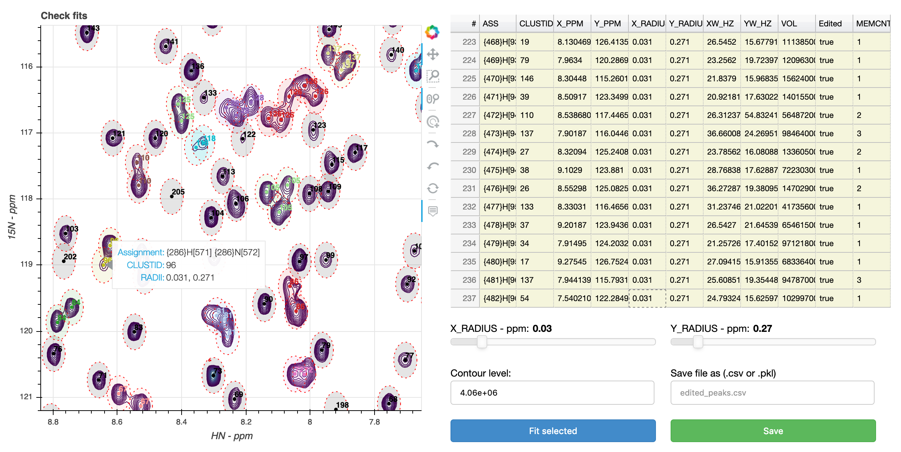
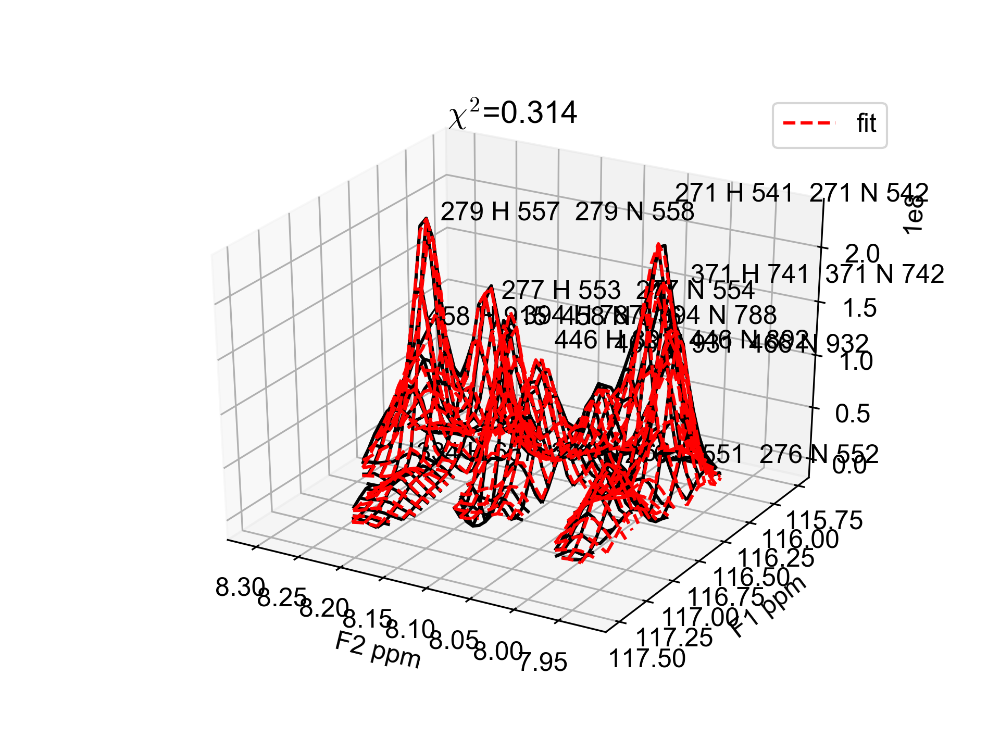
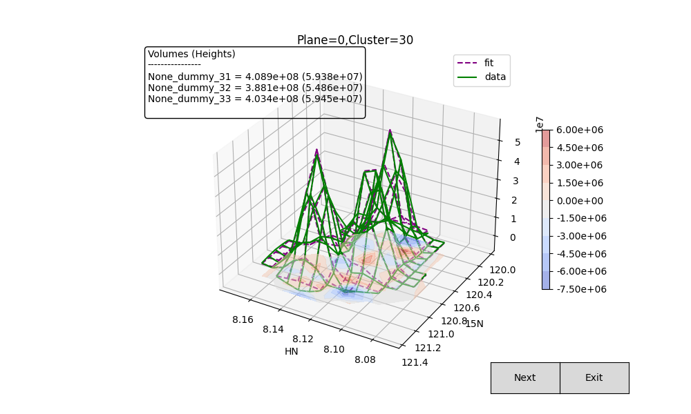

Instructions
Peak lists
First you need a peak list in either Sparky, CCPNMRv2 (Analysis2), CCPNMRv3
(assign) or NMRPipe format. Alternatively, a .csv format file can be used. Details of peak list formats are explained below.
Example of a tab delimited peak table exported directly from CCPNMRv3 assign:
# Pid Spectrum PeakList Id Assign F1 Assign F2 Pos F1 Pos F2 LW F1 (Hz) LW F2 (Hz) Height HeightError Volume VolumeError Merit Annotation Comment
0 1 PK:test1_projection_H_N.1.1 test1_projection_H_N 1 1 10.380684043013412 129.32603752049937 14.179313120050438 18.675223392932594 66224788.0 None 1.0
1 2 PK:test1_projection_H_N.1.2 test1_projection_H_N 1 2 9.335853185661527 129.6732286432531 14.962974392261438 18.644570222511447 39807284.0 None 1.0
2 3 PK:test1_projection_H_N.1.3 test1_projection_H_N 1 3 9.185077855609203 128.66553436519882 13.786411378949163 18.70449353638719 56258792.0 None 1.0
Note
Empty Assign F1 and Assign F2 column rows will be replaced
with dummy labels. Duplicated assignments will also be appended with
dummy labels. This table can be exported from CCPNMRv3 assign by opening
your peak list of interest as a module with the following steps:
- select peaks (Ctrl/Cmd + a)
- right click and select
Export All Columns - Save in
.tsvformat (tab separated) by using the dropdown forFiles of type.
Example of tab delimited peak list exported directly from Analysis2:
Number # Position F1 Position F2 Sampled None Assign F1 Assign F2 Assign F3 Height Volume Line Width F1 (Hz) Line Width F2 (Hz) Line Width F3 (Hz) Merit Details Fit Method Vol. Method
1 1 9.33585 129.67323 2.00000 {23}H[45] {23}N[46] 2.0 3.91116e+07 2.14891e+08 15.34578 19.24590 None 1.00000 None parabolic box sum
2 2 10.38068 129.32604 2.00000 {9}H[17] {9}N[18] 2.0 6.61262e+07 3.58137e+08 15.20785 19.76284 None 1.00000 None parabolic box sum
Note
Position F1 and Position F2 are often flipped
(i.e. F1=x and F2=y). I think this happens by default with
Analysis2, however, you can chastise me for being an idiot if I'm
wrong. peakipy read will flip them automatically, so beware. If you have
"correctly" labelled columns then you can use --posF1 <column_name>
and --posF2 <column_name> to define which column names map to Y_PPM
and X_PPM, respectively.
Minimum:
Assignment w1 w2
PeakOne 118 7.5
PeakTwo 119 7.4
etc...
Also accepted:
Assignment w1 w2 Volume Data Height lw1 (hz) lw2 (hz)
ALA8N-H 123.410 7.967 2.25e+08 15517405 15.8 20.5
PHE12N-H 120.353 8.712 3.20e+08 44377264 9.3 16.6
etc...
Default peak list generated by NMRDraw (e.g. test.tab):
VARS INDEX X_AXIS Y_AXIS DX DY X_PPM Y_PPM X_HZ Y_HZ XW YW XW_HZ YW_HZ X1 X3 Y1 Y3 HEIGHT DHEIGHT VOL PCHI2 TYPE ASS CLUSTID MEMCNT
FORMAT %5d %9.3f %9.3f %6.3f %6.3f %8.3f %8.3f %9.3f %9.3f %7.3f %7.3f %8.3f %8.3f %4d %4d %4d %4d %+e %+e %+e %.5f %d %s %4d %4d
NULLVALUE -666
NULLSTRING *
1 159.453 10.230 0.006 0.004 9.336 129.673 7471.831 10516.882 2.886 2.666 16.937 20.268 159 160 9 11 +2.564241e+07 +2.505288e+04 +1.122633e+08 0.00000 1 None 1 1
2 17.020 13.935 0.002 0.002 10.381 129.326 8307.740 10488.713 2.671 2.730 15.678 20.752 16 18 13 15 +4.326169e+07 +2.389882e+04 +2.338556e+08 0.00000 1 None 2 1
etc...
A custom .csv file must have the following columns
ASS,X_PPM,Y_PPM
test1,8.763,117.821
test2,8.973,122.359
test3,9.005,122.436
It is also possible to provide peak linewidth, volume and height estimates
ASS,X_PPM,Y_PPM,XW_HZ,YW_HZ,VOL,HEIGHT
test1,8.763,117.821,20.0,20.0,10,10
test2,8.973,122.359,20.0,20.0,10,10
test3,9.005,122.436,20.0,20.0,10,10
You can then run peakipy with the following command
peakipy read test.csv test.ft3 csv
If you would like to re-use a peakipy peaklist generated using peakipy read for a new dataset then you can use the peakipy argument
peakipy read test.csv test.ft3 peakipy
NMR spectra
Peakipy accepts NMRPipe processed spectra only. The input data should be either an NMRPipe 2D or 3D cube. By default, peakipy expects a pseudo-3D spectrum with dimension order ID, F1, F2 (Z, Y, X). It is recommended that you process your spectra so that the dimension order is Z, Y, X. However, you can specify the dimension order using the --dims flag. The order in which the --dims flags are provided reflects the order of the dimensions. The integer values reflect the index of the dimension you are re-ordering.
For example:
- For a 3D cube with shape
(X, Y, Z)you would use--dims 2 --dims 1 --dims 0to re-shape to(Z, Y, X). - For a 3D cube with shape
(Y, X, Z)you would use--dims 2 --dims 0 --dims 1to re-shape to(Z, Y, X)
The default dimension order is (Z, Y, X) (e.g. ID, F1, F2) (--dims 0 --dims 1 --dims 2).
Note
By default peakipy expects a pseudo 3D spectrum with dimension order Z, Y, X. For a 2D spectrum with dimension order Y, X then you need to run peakipy read test.tab test.ft2 pipe --dims 0 --dims 1
peakipy read
Here is an example of how to read a Sparky peaklist into peakipy:
peakipy read peaks.sparky test.ft2 sparky --show
This converts your peak list into a pandas DataFrame and uses
threshold_otsu (scikit-image) to determine a cutoff for clustering
overlapping peaks (cluster ids are added to the "CLUSTID" column a la NMRPipe!). The clustered peak list is saved as a csv file peaks.csv to be used as input for
either peakipy edit or peakipy fit.
To set the threshold manually use the --thres option:
peakipy read peaks.sparky test.ft2 sparky --show --thres 1e6
This will exclude signals below 1e6. However, it may be preferable to adjust this parameter interactively using peakipy edit.
Below is an example of a clustered peak list. Clustered peaks are colour coded and singlet peaks are black.

To adjust the clustering behaviour, change the structuring element used for binary closing.
peakipy read peaks.sparky test.ft2 --dims 0 --dims 1 --dims 2 --struc-el disk --struc-size 4 0 --show
The above would use a disk shaped structuring element with a radius of 4 points (see the scikit-image.morphology module for more information).
Adjust the radii used for masking the data by setting the --x-radius-ppm and --y-radius-ppm flags:
peakipy read peaks.sparky test.ft2 sparky --dims 0 --dims 1 --dims 2 --y-radius-ppm 0.2 --x-radius-ppm 0.04
Note
peakipy read will generate a peakipy.config which is subsequently read by edit, fit and check so that the --dims option is not required after running peakipy read:
peakipy edit
If the automatic clustering is not satisfactory you can manually adjust
clusters and initial fitting parameters using peakipy edit. :
peakipy edit <peaklist> <nmrdata>
As of peakipy 2.0.0 this will open a panel session in your internet browser that allows you to interactively edit peak fitting parameters.
This command will start a bokeh server and cause a tab to open in your
internet browser in which you can interactively edit peak fitting
parameters.

Use the table on the right to select the cluster(s) you are interested and double click to edit values in the table. For example if you think peak1 should be fitted with peak2 but they have different clustids then you can simply change peak2's clustid to match peak1's.
Once a set of peaks is selected (or at least one peak within a cluster) you can manually adjust their starting parameters for fitting (including the X and Y radii for the fitting mask, using the sliders).
The effect of changing these parameters can be visualised by clicking on
the Fit selected.
Note
If using matplotlib you will need to have your
interactive backend correctly configured by editing your matplotlibrc
file. If you don't know where that is then you can find it by importing
matplotlib into your Python interpreter and typing
matplotlib.get_data_path(). If you have trouble with opening
interactive matplotlib my first suggestion is to check that you have a
matplotlibrc file placed in your home directory
~/.matplotlib/matplotlibrc with the backend option set to either
TkAgg or Agg. These usually work:
or :
or for Mac users :
To test other peak clustering settings you can adjust the contour level
(akin to changing --thres) or adjust the dimensions of the structuring
element used for binary closing.

If you like the parameters you have chosen then you can save the peak
list using the save button. If you want to return to your edited peak
list at a later stage then run peakipy edit with the edited peak list
as your <peaklist> argument.
Clicking Quit closes the bokeh server.
Peaks can be added via the tap button on the right side of the
spectrum. Once the tap button is activated then peaks are added to the
spectrum by double clicking at the desired position.
peakipy fit
Once you are satisfied with your initial fitting parameters peakipy fit can be
run using the peak list generated by peakipy read or peakipy edit
(e.g. edited_peaks.csv).
For example...
peakipy fit edited_peaks.csv test.ft2 fits.csv --dims 0 --dims 1 --dims 2 --lineshape PV
Fits that are likely to need checking are flagged in the log.txt file.
If you have a vclist style file containing your delay values then you
can run peakipy fit with the --vclist option:
peakipy fit edited_peaks.csv test.ft2 fits.csv --lineshape PV --vclist vclist
This will result in an extra column being added to your fits.csv file
called vclist containing the corresponding delay values.
Note
Here is an example of a vclist style file
0.1
0.2
0.4
0.8
1.0
Checking fits
To plot fits for all planes or interactively check them you can run
peakipy check:
peakipy check fits.csv test.ft2 --clusters 1 --clusters 10 --clusters 20 --show
Will plot clusters 1,10 and 20 showing each plane in an interactive
matplotlib window and save the plots to a multipage pdf called plot.pdf.
Calling peakipy check with the --first flag results in only the
first plane of each fit being plotted. The colour or output plots can be
changed using the --colors like so:
peakipy check fits.csv test1.ft2 --colors green purple --clusters 30 --show --first

Only valid matplotlib color names can be used.
To open an interactive panel in your web browser
peakipy check fits.csv test.ft2 --panel
Run peakipy check --help for more options.
Excluding peaks
Peaks can be excluded from fitting by changing the value in the
include column from yes to no (in the .csv file containing your
peak list). The easiest way to do this is via the peakipy edit script.
Protocol
Initial parameters for FWHM, peak centers and fraction are fitted from
the sum of all planes in your spectrum (for best signal to noise).
Following this, the default method is to fix the center, linewidth and
fraction parameters only fitting the amplitudes for each plane. If you
want to float all parameters, this can be done with --fix None or you
could just float the linewidths and amplitudes with
--fix fraction --fix center.
Outputs
-
Pandas DataFrame containing fitted intensities/linewidths/centers etc:
,fit_prefix,assignment,amp,amp_err,center_x,center_y,sigma_x,sigma_y,fraction,clustid,plane,x_radius,y_radius,x_radius_ppm,y_radius_ppm,lineshape,fwhm_x,fwhm_y,center_x_ppm,center_y_ppm,sigma_x_ppm,sigma_y_ppm,fwhm_x_ppm,fwhm_y_ppm,fwhm_x_hz,fwhm_y_hz 0,_None_,None,291803398.52980924,5502183.185104156,158.44747896487527,9.264911100915297,1.1610674220702277,1.160506074898704,0.0,1,0,4.773,3.734,0.035,0.35,G,2.3221348441404555,2.321012149797408,9.336283145411077,129.6698850201278,0.008514304888101518,0.10878688239041588,0.017028609776203036,0.21757376478083176,13.628064792721176,17.645884354478063 1,_None_,None,197443035.67109975,3671708.463467884,158.44747896487527,9.264911100915297,1.1610674220702277,1.160506074898704,0.0,1,1,4.773,3.734,0.035,0.35,G,2.3221348441404555,2.321012149797408,9.336283145411077,129.6698850201278,0.008514304888101518,0.10878688239041588,0.017028609776203036,0.21757376478083176,13.628064792721176,17.645884354478063 etc... -
log.txtcontains fit reports for all fits - If
--plot <path>option selected when runningpeakipy fit, the first plane of each fit will be plotted in \<path> with the files named according to the cluster ID (clustid) of the fit. Adding--showoption callsplt.show()on each fit so you can see what it looks like. However, usingpeakipy checkshould be preferable since plotting the fits during fitting slows down the process a lot.
You can explore the output data conveniently with pandas. :
In [1]: import pandas as pd
In [2]: import matplotlib.pyplot as plt
In [3]: data = pd.read_csv("fits.csv")
In [4]: groups = data.groupby("assignment")
In [5]: for ind, group in groups:
...: plt.errorbar(group.vclist,group.amp,yerr=group.amp_err,fmt="o",label=group.assignment.iloc[0])
...: plt.legend()
...: plt.show()